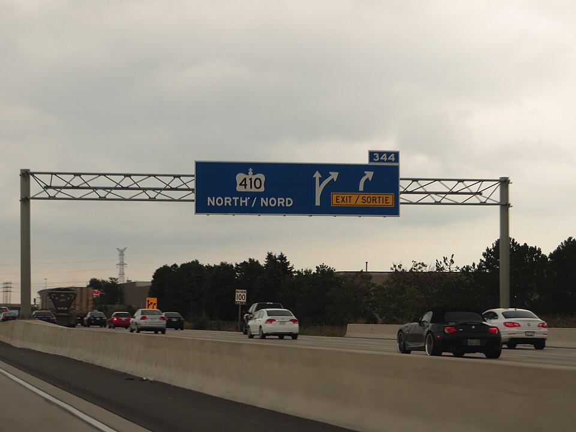
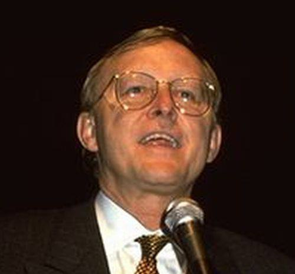
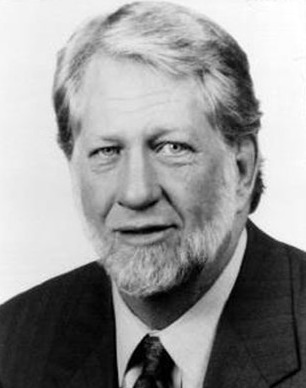
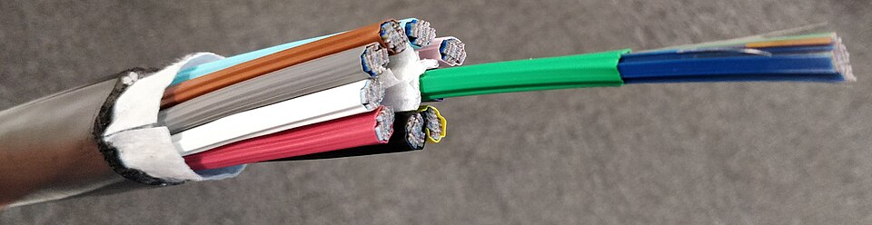
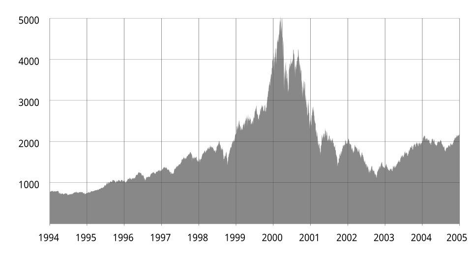
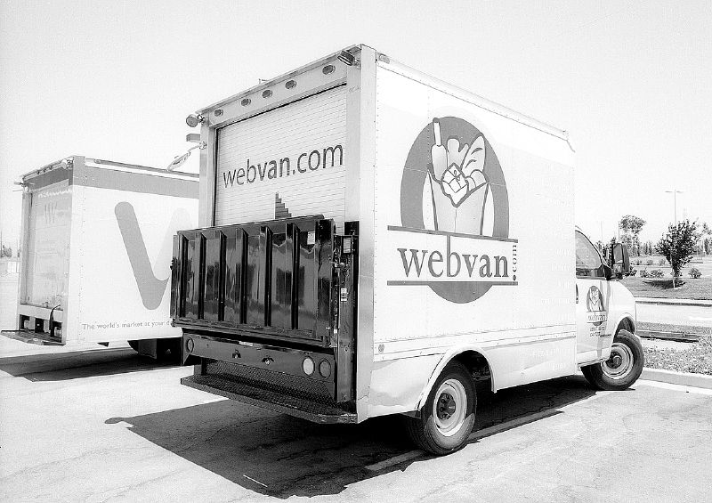
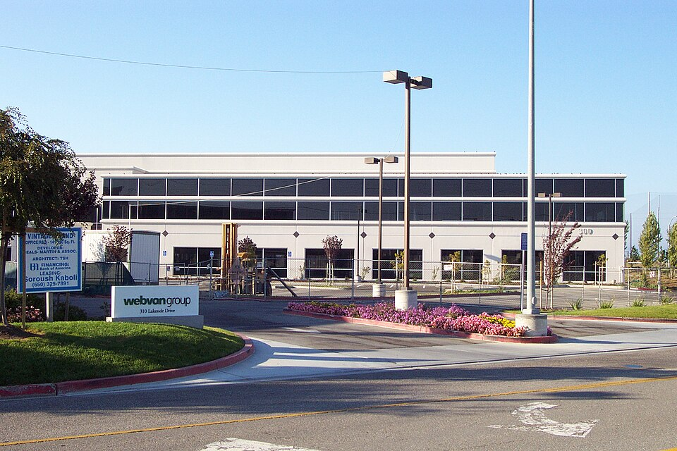
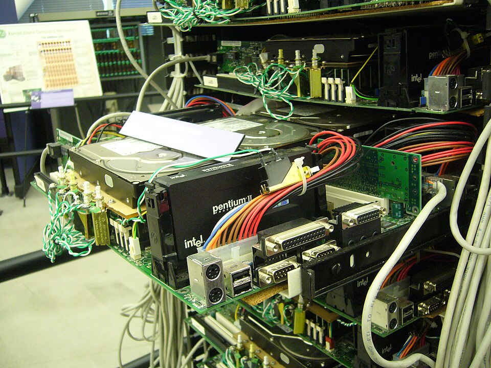
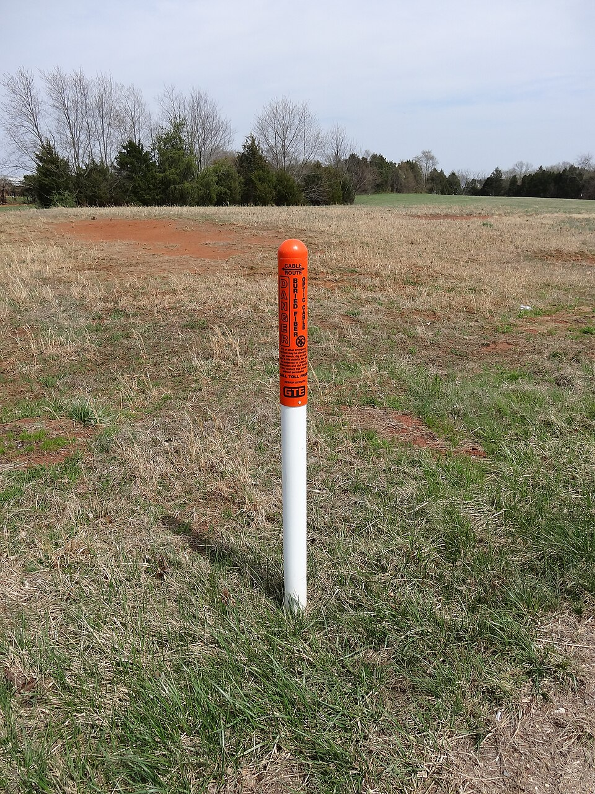

A bolha
De 1995 a 2002, em ordem e com as pessoas. O episódio anterior fechou o arco da máquina, do ábaco ao programa que passou a ser achado. Aqui a série volta pra rede, no ano em que ela abriu pro comércio e o dinheiro chegou antes do uso. Pela primeira vez a promessa do software mandou construir o hardware cedo demais. Quando o áudio pedir, aperte Próximo.
A estrada de dez pistas. Alguém otimista demais asfalta dez pistas pra uma cidade de mil carros. Quem pagou a obra quebra, porque não há pedágio que cubra. Mas a estrada não some: fica ali, vazia. Vinte anos depois a cidade tem um milhão de carros e usa a obra pronta por quase nada. A bolha é a obra. A fibra é o asfalto.

Uma empresa de dezesseis meses
O dinheiro olhou pra atenção das pessoas em vez do balanço. O software criou usuário, e o mercado aceitou isso como valor.


Crescer primeiro, cobrar depois
Sem lucro pra medir, o valor virou promessa. E alguém precisava dizer quanto ela valia.
A régua quebrada
O instrumento que dizia quanto as coisas valiam estava com defeito, e ninguém tinha outro. Sem régua, o exagero não encontra parede.
Dinheiro sem freio
O software prometia entregar qualquer coisa em qualquer lugar. O caminhão, a caixa e a gasolina não ficaram mais baratos porque a internet existia.

A fibra apagada
O software prometeu um uso que não existia, e o hardware saiu na frente.


O pico, e a queda

O índice fecha em 5.048 pontos e começa a cair. O fundo chega em outubro de 2002, com 1.114 pontos: queda de 78 por cento e mais de 5 trilhões de dólares evaporados.
As empresas fechando
O que matou essa turma não foi erro de código. Foi entregar uma caixa por menos do que a entrega custa.


Sobreviveu quem tinha uso embaixo da promessa
Enquanto o dinheiro comprava outdoor, esses estavam resolvendo um problema técnico de verdade. O que segurou não foi marketing, foi utilidade.

Três heranças
Foi esse cano largo que permitiu o vídeo sem travar, a loja grande entregando rápido e a ideia de guardar seus arquivos num galpão longe de você. Mas ele não resolveu o último quilômetro, o cabo da rua até dentro da casa: esse foi outro problema, depois.

A ordem se inverteu
Em toda a série o hardware abriu o caminho e o software cresceu pra ocupar o espaço. Aqui foi o contrário: a promessa do software mandou construir a rede antes da hora. A obra saiu cedo, quem pagou faliu, e a infraestrutura ficou esperando o software alcançar o tamanho dela.
2002
Agora existe cano largo, dezenas de milhões de pessoas conectadas e página nova surgindo a cada minuto. Página demais. Se milhões delas falam da mesma coisa, quem decide qual você vê primeiro, e como quem decide isso ganha dinheiro?